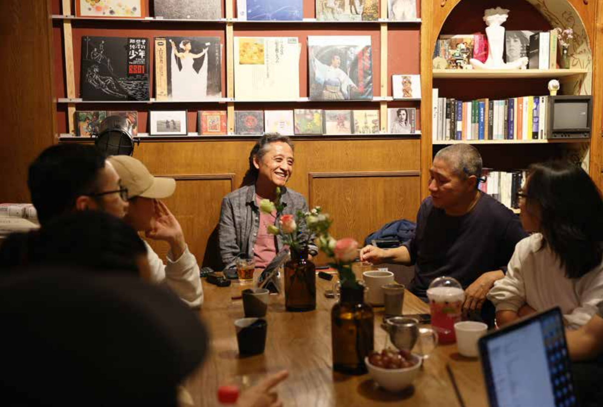

In Harbin, a group of scholars and readers are moving academic talks out of universities and into bookstores, cafés, and hostels. The events are ticketed, seats are limited, and no one is “assigned” to attend—yet the rooms are packed, questions are sharp, and attention is hard-won. What’s being tested here is not a trend, but a practice: how to recover the pleasure of thinking when knowledge has long been reduced to performance, credits, and efficiency.

This piece examines off-campus intellectual life as a lived practice rather than a cultural “trend.” Through long-form reporting in Harbin, it follows how scholars, students, and readers rebuild conditions for attention, discussion, and disagreement outside institutional classrooms— not to romanticize “grassroots culture,” but to ask what it takes for thinking to feel necessary again.
Excerpt 1: Moving lectures off campus
The day before I arrived in Harbin, a piece of news drew widespread attention. Photographer Stephen Shore gave a lecture at the CAFA Art Museum, titled “Five Experiences That Changed My Life and How They Made Me an Artist.”
What was expected to be a routine celebrity lecture took an unexpected turn. Shore suddenly paused his talk through the interpreter and calmly addressed the audience: “Many of you have been on your phones from beginning to end. You came here to listen, yet you cannot concentrate. If you cannot pay attention here, can you still notice the food you eat, or the feeling of sunlight on your skin? Let’s stop here today. That’s fine.”
With that, he stepped down from the stage and returned to the audience.
Excerpt 2: Why campus lectures have grown hollow
Wu Suran understands this clearly. Today’s university students are overwhelmed— coursework, clubs, and a constant stream of institutional obligations. Where is the energy left for the enjoyment of knowledge?
“Even if I tell students this lecture is genuinely good, they don’t believe it anymore,” Wu said helplessly. “They’re exhausted. Even when a nationally renowned scholar comes, the lecture still ends up feeling dull.”
Once, during a lecture, he happened to sit next to a female student. She spent the entire session knitting, leaving him both amused and dismayed.
Ironically, it is often only after graduation that students suddenly grasp the theories once taught in class. One former student, now working at a major tech company, returned six months later and told him: “Professor, I finally understand what ‘alienated labor’ means.”
Faced with real struggles in the workplace, textbook concepts suddenly aligned with lived experience.
Excerpt 3: When reading becomes serious again—off campus
Anyroom is tucked inside a quiet residential compound—without Jiudan, I wouldn’t have found it. In September, Harbin already carries an early-winter chill, yet the afternoon sun still feels warm on the street.
The room is small; a wall has been removed, a long table sits in the center, and smaller round tables scatter around. Books and coffee cups lie casually—no sense of formality. On the table are printouts from Marguerite Yourcenar’s Oriental Tales.
Once everyone settled, Yi Han began immediately. The group took turns reading “How Wang-Fô Was Saved.” When my turn came, I meant to observe, but Yi Han gestured—and I continued the passage. I was nervous at first, afraid of stumbling, yet my attention slowly locked onto the words in front of me.
After the final lines, Yi Han commented that although the story is set in China, Yourcenar’s understanding of Chinese culture “clearly carries a foreigner’s bias.” The discussion moved from Wang-Fô’s coldness toward his apprentice’s death to aesthetics and cultural collision, and finally to the anxiety of Western modernity facing the collapse of traditional order.
Excerpt 4: When classrooms no longer offer reasons to read
Wang Liqiu noticed it immediately. The students were simply completing tasks, not truly engaging in discussion. He reflected that many classes today are forced into becoming compressed explanations of key points— and behind this lies a deeper issue: students simply do not read enough.
“What is ideal teaching?” Wang asked. “It would mean reading one or two texts per class, with everyone having actually read them, and then discussing them together. But when students don’t read, we retreat to presentations. In the end, only the presenters read; everyone else still hasn’t.”
As a result, teachers repeat dry summaries: “You condense a few points for them— reading becomes optional, as long as they memorize enough to pass exams.”
As education grows increasingly utilitarian, students’ goals narrow: passing exams, completing degrees. Some learn how to respond “efficiently”— reading abstracts and conclusions, relying on summaries instead of full texts. Efficiency improves, but as Wang put it, “the invisible learning process disappears, and with it, interest.”
He joked that academia now produces many “academic civil servants”— people with little interest in scholarship itself, treating research as routine labor. Students adopt similar tactics; some even train others in how to perform academically.
“They teach you how to look like a good student. What should be pursued is the pleasure of learning itself, but now all that matters is how well one performs the role. Academic content becomes irrelevant.”
Excerpt 5: Does what they do really matter?
That evening, Jiudan invited me to “Wanderer’s Living Room,” a small offline space newly opened by Zhijian on Qiaodong Street. The modest room was created by her and her friends as a shared salon. She gathered old friends, and we sat together, talking freely about ideals and reality.
It was then that I learned the area where Wenxin Café once stood had been sealed off again by university walls. Foot traffic declined, and Jiang Chao decided to leave the place that once held his ideals, returning south.
We talked about a newly opened “academic bar” in the city— seemingly a trend shaped by market demand. But Jiudan and Jiang Chao believed that anything with real vitality must emerge spontaneously. Jiang Chao said, “What comforts me is that after I leave, there are still friends here, still doing things.”
That night, Wang Liqiu shared a novel he had been reading, *Tenpyō no Iraka*. It tells the story of a Japanese monk who traveled to China to transmit Buddhist teachings, spending decades copying scriptures, only for his ship to capsize on the return journey— the man gone, the scriptures lost.
“Do you think what they did mattered?” Wang asked, then answered: “Sometimes, when you do something, you don’t need to calculate the outcome. You simply keep doing it. It may not become meaningful right away, but you know— you did it. And that is enough.”
It was late. We dispersed.